Introducción
Sistemas Ágiles Líder en negocios digitales les presenta el manual de procedimiento para el uso del sistema SIGA, donde se pretende que el manual pueda educar en la optimización de los procesos del sistema “SIGA” donde esperamos que su impacto sea la rápida familiarización de nuevos docentes como de nuevos estudiantes, sin olvidarse de estudiantes o docentes con mas experiencia.
Los estudiantes de Primer semestre del INSTITUTO YAVIRAC, hemos realizado en conjunto con Sistemas Agiles el manual, partiendo de los objetivos marcados al inicio de esta introducción.
Actualizar Ficha personal Estudiante
Colocar su usuario y contraseña presione en el botón ingresar.
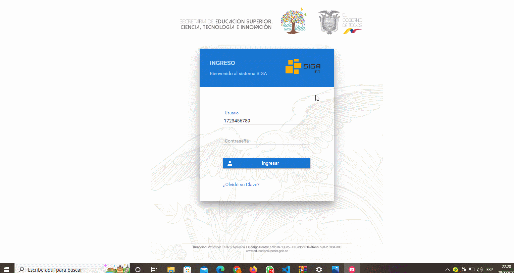
Luego de haber ingresado diríjase a la esquina superior izquierda a la sección módulos presione click y presione click en el módulo "Académico".

Una vez que haya ingresado en el módulo Académico, en el menu "Estudiante" , dar click en el submenu ¨Ficha Personal¨. Se abrirá la Ficha Personal en caso de ser nuevo los campos vendrán sin llenar y en caso de estudiantes que se han matriculado en semestres anteriores mediante el SIGA vendrá con los datos pre cargados.

Datos Personales
Seleccionar una foto apropiada, con fondo blanco y que se aprecie bien el rostro. Los campos son de 3 tipos de seleccionar, de texto libre y de tipo fecha Los campos obligatorios están marcados con un asterisco de color rojo, estos no pueden dejarse en blanco debido a que obligatoriamente deben cargarse en el sistema. Hay una consideración importante en el campo "Etnia" al darle click aparecerán un conjunto de valores los cuales pueden ser seleccionados. En particular si selecciona la etnia indígena se habilitara el campo de "Pueblo/Nacionalidad" para seleccionar uno de los que estén disponibles, en el caso de no seleccionar la nacionalidad indígena y seleccionar otra etnia automáticamente se bloqueara el campo "Pueblo/Nacionalidad".

En el campo de discapacidad en el caso no poseer se deja marcado el valor podrá pasar al siguiente campo de enfermedades catastróficas, si tiene alguna discapacidad tendrá que seleccionar el valor si se habilitaran los campos: tipo de discapacidad, porcentaje de discapacidad y número de carne en caso de no contar con el carnet tendrá que seleccionar que no tiene una discapacidad y seleccionar una enfermedad catastrófica o cuando se comunique con docente con usted poderle indicar la particularidad de su caso.
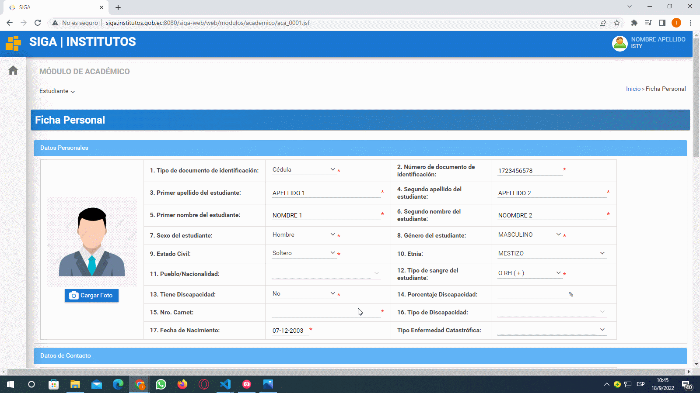
Datos de contacto y Datos adicionales
Completar todos los datos. De igual manera tendrá que completar los datos, seleccionando los valores disponibles En el caso del campo Cantón de nacimiento y Cantón de residencia se tendrá que llenar presionando el icono de lupa y se abrirá una ventana emergente en la que podrá filtra por Provincia o por el Nombre del Catón, escriba la Provincia y presione la tecla tab de su teclado para pasar a llenar el campo del Cantón, evite presionar la tecla enter. En el campo de Cantón de residencia se llenara de igual manera.

El campo de ubicación geográfica se diferencia a los demás y en cual tendrá que colocar la latitud y longitud de donde vive para ello tendrá que darle click en el botón cargar información y aparecerá una ventana emergente en la cual podrá buscar su ubicación, en caso de que le aparezca un mensajes de Google en el que diga que no puede cargar correctamente los mapas simplemente tendrá que darle doble click en el botón aceptar y le permitirá seleccionar su ubicación, para poder desplazarse por el mapa tendrá que presionar la tecla Ctrl de su teclado y con el con la rueda del mouse poder acercar o alejar la vista del mapa, para seleccionar su latitud y longitud tendrá que dar click izquierdo y automáticamente se va capturar los puntos le da click en el botón aceptar y automáticamente se llenará los campos.

Termine de completar toda la información necesaria.
Datos Institucionales
En el campo "Tipo de colegio" darle click y tiene que colocar el tipo colegio que estuvo estudiando.

En ocupación existen dos opciones si el usuario: solo estudia o trabaja y estudia. En el caso de seleccionar que solo estudia en el siguiente campo tendrá que colocar que no aplica, pero en el caso de que haya seleccionado la opción que trabaja y estudia tendrá que seleccionar una de las tres opciones disponibles.
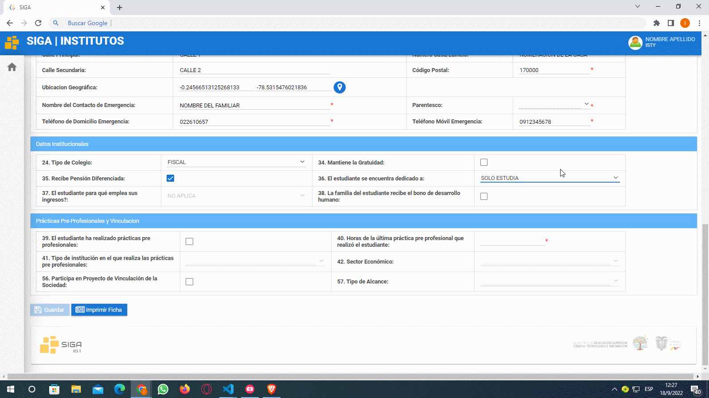
En el campo de mantiene la gratuidad viene bloqueado asi que no tiene que modificar nada, en el campo de pensión diferencias y bono de desarrollo tendrá que marcar en caso de que reciba pero en el caso de que no reciba los dejará sin marcar y tendrá que seguir completando los demás campos.
Prácticas Pre-Profesionales y Vinculación
En el campo de prácticas pre-profesionales solo se colocará información referente a las prácticas que ha hecho en el nivel superior al igual que en el campo de vinculación con la sociedad, en caso de haber realizados las prácticas pre-profesionales a nivel superior marcar la casilla y colocar el número de horas realizadas. En el campo Entorno Institucional es donde realizo las prácticas pre-profesionales y seleccionar una de las opciones, en el caso de no haber realizado las practicas tiene que seleccionar la opción de no aplica y completar los datos faltantes. Una vez que haya terminado de llenar todos los campos tiene que darle click en el botón guardar y luego darle click en el botón imprimir ficha y se va generar un archivo pdf con ciertos datos que usted registro en estas tres secciones, cabe recalcar que no aparecerán todos datos solo los mas relevantes luego tendrá que firmarla con esfero color azul y posteriormente esa ficha se utilizará para su formalización de pre-matricula.
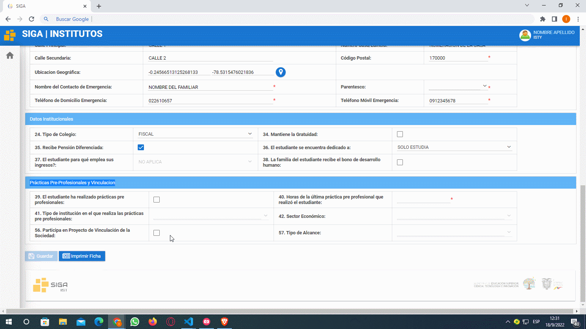
Manual para iniciar sesión en el sistema SIGA
-
Ingrese a la Página del SIGA o puede ingresar mediante el siguiente link* siga.institutos.gob.ec
-
Ingrese su usuario
-
Ingrese su contraseña y presione en el botón ingresar*

Preguntas relacionadas
¿Cuál es la dirección para ingresar al sistema SIGA?
¿Como ingresar al sistema SIGA?
¿Cuál es el link del sistema SIGA?
¿Como recuperar mi contraseña?
Interfaz de Usuario
Una vez iniciado sesión en el sistema SIGA encontrara la siguiente interfaz.
-
En la barra superior derecha se encuentra el nombre de usuario con el que esta registrado en el sistema SIGA.

-
El ícono usuario contiene submenús de ayuda.

-
En la barra superior izquierda se encuentra un ícono amarillo que le permite recargar la página.

-
En la barra lateral izquierda está la sección módulo que contiene los menús principales que varia según el rol logeado.

-
Cada menú contiene submenus para las funcionalidades del sistema SIGA.
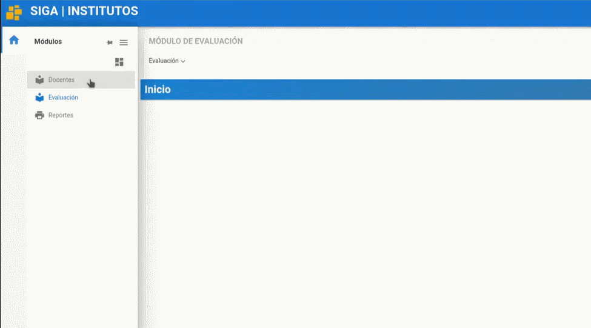
-
En el centro de la pantalla aparececera las funcionalidades según la opción que escoja en el menú.

Preguntas relacionadas
¿Cómo puedo cerrar sesión?
¿Dónde puedo ver los módulos que tengo ?
¿Cómo puedo regresar al inicio?
Manual Actualizar Ficha del Docente
Para actualizar sus datos personales como Docente
-
Ingrese en la sección Módulos, en la esquina superior izquierda y elija en el módulo Docentes.

-
En el menú Mi Docencia seleccione el submenú Ficha Docente.

-
Colocar una foto del docente.

-
Actualice los datos según sea necesario para colocar los datos correctos y llene cada uno de los campos.

-
Presione el Botón Guardar.

Le aparecerá un mensaje de Guardado Exitoso
-
Presione el Botón Imprimir Ficha.

Verifique en su computador la descarga de la ficha.
Preguntas Relacionadas
¿Dónde puedo cambiar mis datos de docente?
¿Cómo cambiar mis datos de docente?
¿Qué debo poner para cambiar mis datos de docente?
¿Cómo actualizar mis datos personales como docente?
Crear asistencia
Para crear asistencia dentro del sistema SIGA.
-
Diríjase al apartado superior derecha y seleccione su perfil y en el submenú e ingrese a "Cambio de Instituto".

-
En perfil, seleccione "Líder SIGA" y presione "Aceptar".

-
Diríjase a la sección "Módulos" en la parte superior izquierda e ingrese al módulo "Matricula".
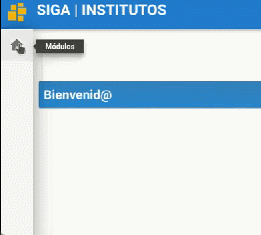
-
Nos dirigimos a menú "Matricula" submenú "Maestro de Asistencias".

-
Automáticamente se van generando las asistencias conforme las configuraciones de los horarios y calendarios, sin embargo, también podemos generar o filtrar por carrera.
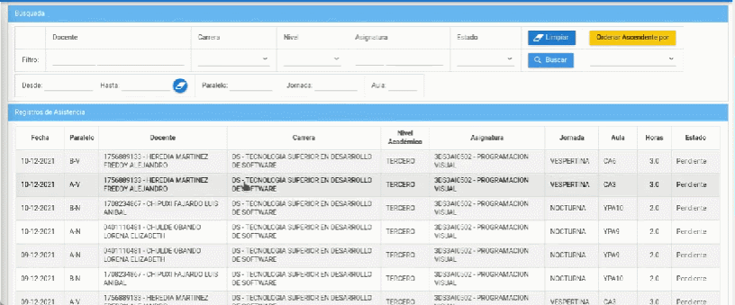
-
Por ejemplo vamos a generar los de CUARTO y a continuación presionar botón "Generar".

-
Se mostrará en pantalla un cuadro, seleccione la fecha y presione "Aceptar" y aparece la materia programación de aplicaciones web del docente correspondiente, del turno vespertino de esta manera se genera la asistencia a partir de aquí adelante todos los días se generaría asistencia de forma automática para las asignaturas que tengan configurado, el horario y calendario.

Preguntas relacionadas
¿Es necesario un rol?
¿Se genera automáticamente mi asistencia después de la generada?
¿Como genero una asistencia para una asignatura específica?
Manual cambio de perfil en la plataforma SIGA
-
Ingrese a la plataforma SIGA.
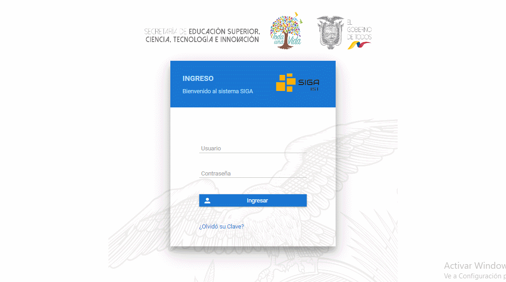
-
Diríjase a la esquina superior derecha de la pantalla, presione click sobre su nombre e ingrese la opción de "Cambio de Instituto"
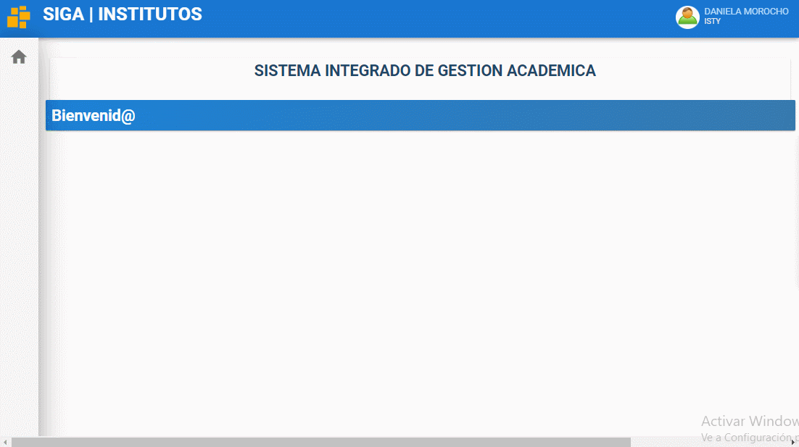
-
Ubiqur el campus perfil, seleccione el perfil deseado y finalmente presione el boton "Aceptar" y ya ha cambiado el perfil.
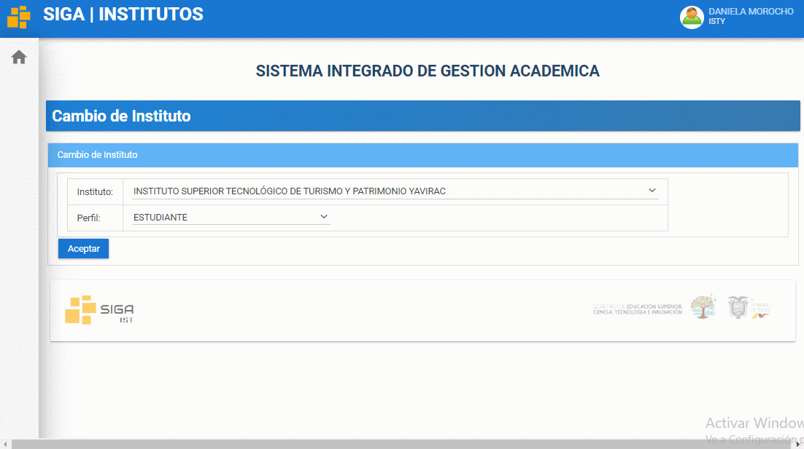
Preguntas relacionadas
¿Cómo cambio el perfil de usuario?*
¿Cuándo tengo que cambiar mi perfil de usuario?
¿Cuántos perfiles de usuarios puedo tener?
Modificar Paralelo en el sistema SIGA
Para actualizar un paralelo realize lo siguientes pasos
-
Seleccione la asignatura en la que desea actualizar el paralelo, presione el botón modificar.

-
En el apartado nombre coloque el paralelo asignado , seleccione la jornada correspondiente.

-
Una vez completado el proceso presione el botón guardar.

Manual Añadir Entidades Publicas/Privadas
Para añadir entidades Publicas o Privadas.
-
Ingrese en la sección Módulos, en la esquina superior izquierda y elija en el módulo Académico.


-
En el Módulo de Académico elija el submenú Administración.

-
Ingrese en el submenú Entidades Públicas Privadas.

-
Se podrá revisar los datos de las empresas y las personas a las que se podrá contactar.

-
Presione el Bóton Nuevo si desea agregar una nueva empresa .
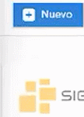
Le aparecerá un mensaje de Guardado Exitoso
-
Presione el Botón Modificar si desea actualizar los datos de la empresa.

Preguntas Relacionadas
¿Dónde puedo cambiar datos de empresas?
¿Cómo cambiar mis datos de empresa?
¿Qué debo poner para cambiar mis datos de empresa?
¿Cómo actualizar los datos empresariales?
Crear asistencia
Para crear asistencia dentro del sistema SIGA.
-
Diríjase al apartado superior derecha y seleccione su perfil y en el submenú e ingrese a "Cambio de Instituto".
-
En perfil, seleccione "Líder SIGA" y presione "Aceptar".
-
Diríjase a la sección "Módulos" en la parte superior izquierda e ingrese al módulo "Matricula".
-
Nos dirigimos a menú "Matricula" submenú "Maestro de Asistencias".
-
Automáticamente se van generando las asistencias conforme las configuraciones de los horarios y calendarios, sin embargo, también podemos generar o filtrar por carrera.
-
Por ejemplo vamos a generar los de CUARTO y a continuación presionar botón "Generar".
-
Se mostrará en pantalla un cuadro, seleccione la fecha y presione "Aceptar" y aparece la materia programación de aplicaciones web del docente correspondiente, del turno vespertino de esta manera se genera la asistencia a partir de aquí adelante todos los días se generaría asistencia de forma automática para las asignaturas que tengan configurado, el horario y calendario.
Preguntas relacionadas
¿Es necesario un rol?
¿Se genera automáticamente mi asistencia después de la generada?
¿Como genero una asistencia para una asignatura específica?
Manual para eliminar asignaturas
-
Para poder eliminar asignaturas coloquese en el perfil de líder siga y nos dirigimos al módulo matrícula.
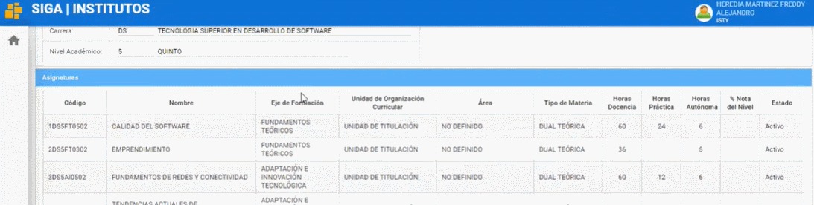
-
Diríjase al menú instituto y elegimos carreras.
-
Seleccione la carrera deseada y dé click en el botón "Niveles Académicos".
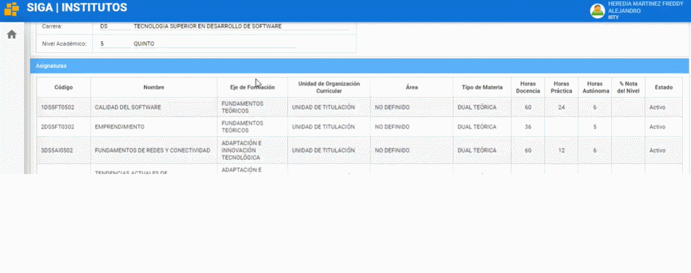
-
Seleccione el semestre y presione click en el botón "Asignaturas".
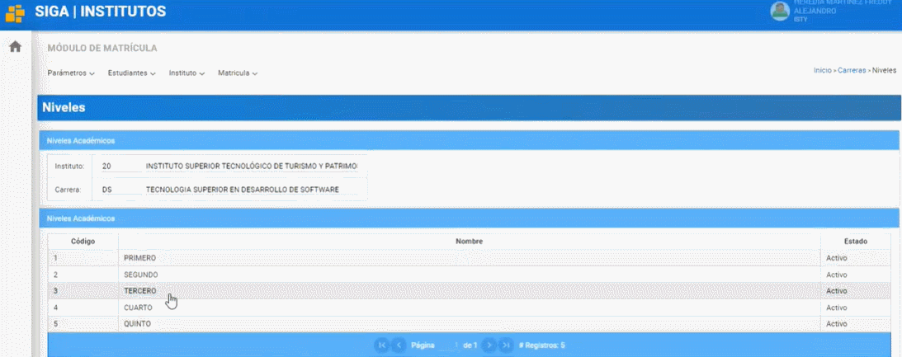
-
Elija la asignatura que quiera borrar y dé click en el botón "Eliminar" y listo, ha completado el proceso de eliminar una asignatura.
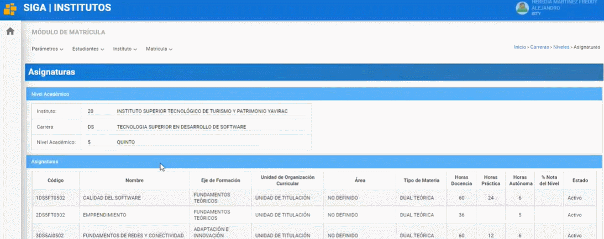
Manual para crear asignaturas
-
Para poder crear asignaturas solo lo pueden hacer los coordinadores de carrera y debe colocarse en el perfil de líder siga

-
Nos dirigimos al modulo matricula luego al menú instituto y elegimos carreras

-
Nos dirigimos hacia la carrera que deseamos crear una asignatura (En este ejemplo seleccionamos Desarrollo de Software) y damos clic en el botón “Niveles Académicos”

-
Seleccionamos la asignatura y clickamos en el botón "Nuevo". 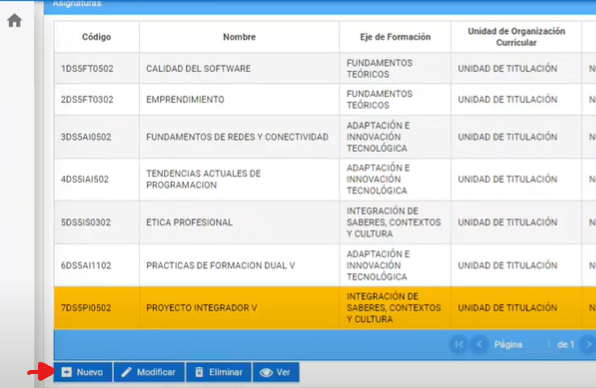 Y nos mostrará una serie de opciones que podemos generar en la asignatura. 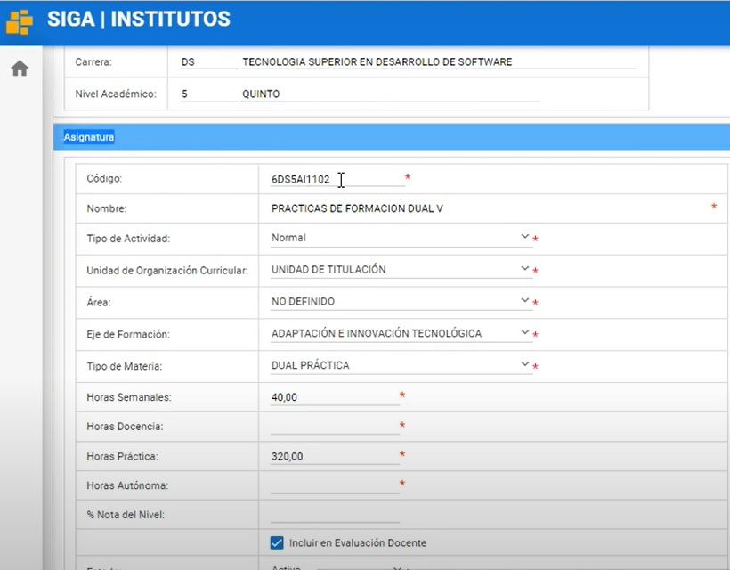
Opciones de generación de asignatura
En el apartado codigo coloque el nuevo código de la asignatura. En el apartado “Nombre” colocaremos el nombre de la asignatura que deseamos generar.

Tipo de Actividad: puede elegir si es, normal(Pertenece a la malla), proyecto integrador, practicas preprofesionales, inglés o titulación.

Unidad de Organización Curricular: elegiremos su es unidad básica, unidad profesional, unidad de titulación, complementarias o dualidad .

Área: Podrá escoger el área que se desempeñe la asignatura.

Eje de Formación: en esta opción podrá elegir entre: fundamentos teóricos, adaptación e innovación tecnológica, comunicación y lenguajes, integración de saberes, contextos y cultura y no definido.

Tipo de Materia: Podremos escoger si la asignatura será, Normal, Dual teórica o Dual practica

En las siguientes opciones tenemos: Horas Semanales Horas Docencia, Horas Practica, Horas Autónoma, % Nota del Nivel ( elegiremos el peso que tendrá la nota de la materia creada o modificada frente al proyecto integrador en caso de tener), estado puede ser activo o inactivo.

-
Una vez hayamos llenado las opciones según el tipo de materia generada, podremos elegir si la materia tendrá “PRE-REQUISITOS” Y/O “CO Requisitos” 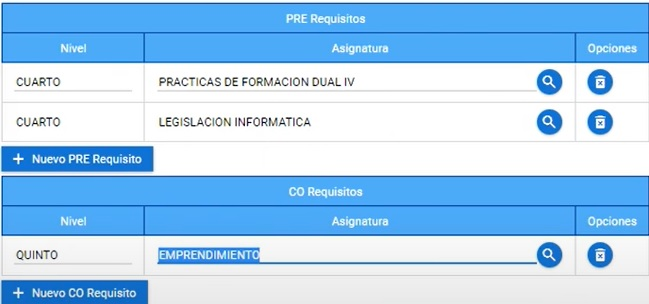
-
Una vez finalizado el proceso damos clic al botón “Guardar” y listo ha completado el proceso de generar una asignatura.

Manual para crear asignaturas
-
Para poder crear asignaturas coloquese en el perfil de líder siga 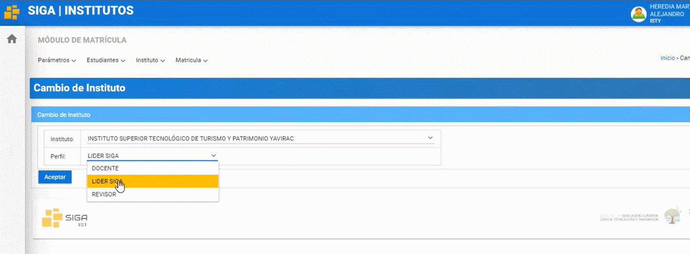
-
Nos dirigimos al modulo matricula luego al menú instituto y elegimos carreras
-
Nos dirigimos hacia la carrera que deseamos crear una asignatura (En este ejemplo seleccionamos Desarrollo de Software) y damos clic en el botón “Niveles Académicos”

-
Seleccionamos el nivel que deseemos ver las asignaturas y escogemos el nivel y damos clic al botón “Asignaturas”

-
Seleccionamos la asignatura que deseamos modificar. 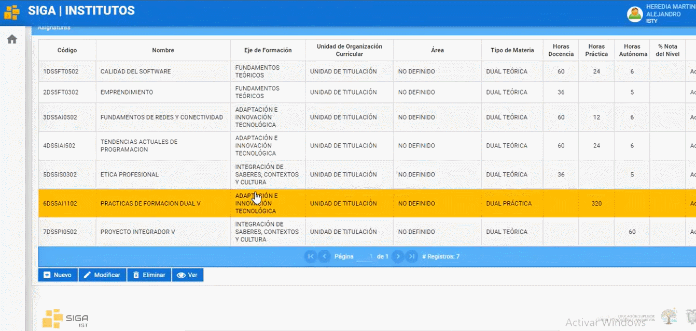 Y nos mostrara una serie de opciones que podemos modificar en la asignatura.

Opciones de modificación o creación de asignatura
En el apartado codigo coloque el nuevo código de la asignatura. En el apartado “Nombre” colocaremos el nombre de la asignatura que deseamos modificar.

Tipo de Actividad: puede elegir si es, normal(Pertenece a la malla), proyecto integrador, practicas preprofesionales, inglés o titulación
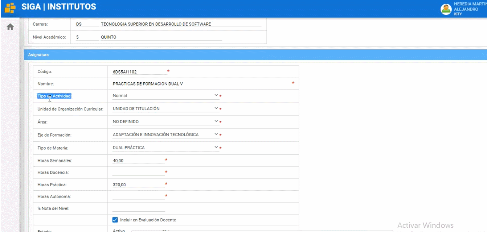
Unidad de Organización Curricular: elegiremos su es unidad básica, unidad profesional, unidad de titulación, complementarias o dualidad

Área: Podrá escoger el área que se desempeñe la asignatura

Eje de Formación: en esta opción podrá elegir entre: fundamentos teóricos, adaptación e innovación tecnológica, comunicación y lenguajes, integración de saberes, contextos y cultura y no definido.

Tipo de Materia: Podremos escoger si la asignatura será, Normal, Dual teórica o Dual practica

En las siguientes opciones tenemos: Horas Semanales Horas Docencia, Horas Practica, Horas Autónoma, % Nota del Nivel ( elegiremos el peso que tendrá la nota de la materia creada o modificada frente al proyecto integrador en caso de tener), estado puede ser activo o inactivo.
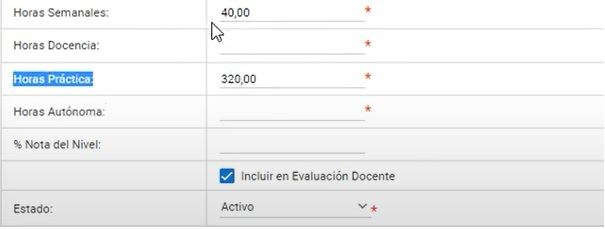
Una vez hayamos llenado las opciones según el tipo de materia creada o modificada, podremos elegir si la materia tendrá “PRE-REQUISITOS” Y/O “CO Requisitos”

Una vez finalizado el proceso damos clic al botón “Guardar” y listo ha completado el proceso de crear una nueva asignatura o modificar una asignatura. 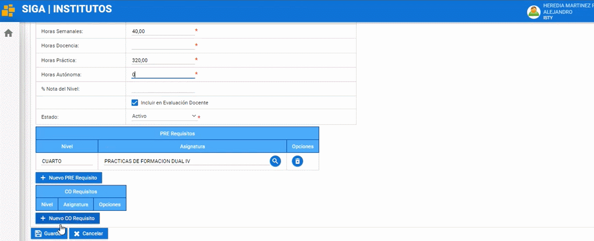
Registro de asistencia en el sistema SIGA
Una vez que inicio sesión en el sistema SIGA.
-
Dirijase a la sección módulo y seleccione el menú docente.

-
Seleccione el submenú "Mi Docencia" seguido del apartado Distributivo.

-
Elija la fecha de registro, presione el botón registro de asistencia.

-
Coloque el tema y la observación del motivo para generar el registro de asistencia.

-
Seleccione las horas que estuvo ausente el estudiante. 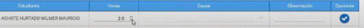
-
Seleccione la causa por la que no estuvo el estudiante. 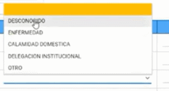
-
Una vez completado el proceso, haga click que el botón aceptar. 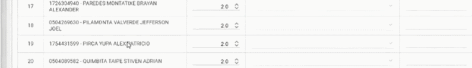
Registro de notas
Realizamos los siguientes pasos.
-
Selecciones el submenú solicitudes.

-
Haga click en el botón nuevo.

-
Elija el tipo de solicitud.

-
Seleccione la fecha que desea generar el registro, seguido del paralelo.

-
Presione el botón guardar.
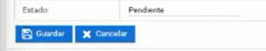
Tipo de Materias
-
Diríjase al apartado superior derecha y seleccione su perfil y en el submenú e ingrese a "Cambio de Instituto".
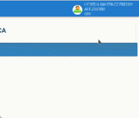 -
En perfil, seleccione "Docente" y presione "Aceptar".

-
Diríjase a la sección "Módulos" en la parte superior izquierda e ingrese al módulo "Matricula" a continuación nos dirigimos a menú "Parámetros" submenú "Tipos de Materia".

-
Observara el nombre del Instituto y los tipos de materia.

-
Seleccione un tipo de materia donde se le dará la opción de "Modificar" y "Ver".

En la opción "Modificar" podrá editar el Tipo de Materia que selecciono. Los campos con (*) son obligatorios. 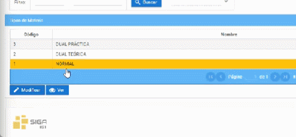
En la opción "Ver" podrá visualizar el estado que se encuentra el Tipo de materia que selecciono.

Preguntas relacionadas
¿Cómo visualizo un Tipo de Materia?
¿Cómo módifico correctamente un Tipo de Materia?
Carga de Notas
La carga de notas en el sistema SIGA, es muy sencillo y fácil de realizar.
-
Diríjase al módulo "Docentes"
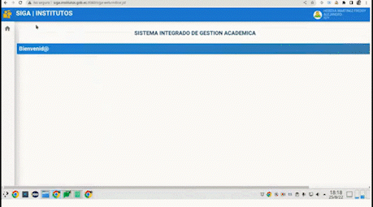
-
En el módulo "Docentes" seleccioné el sub modulo "Distributivo"
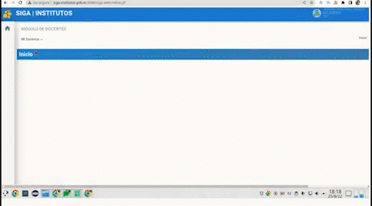
-
Diríjase al enlace abierto de la asignatura en la que desee digitar las notas.

-
Seleccione el botón guardar después de haber digitado las notas de cada uno de los estudiantes
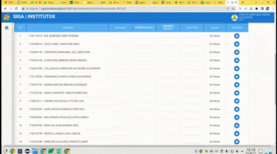
PREGUNTAS RELACIONADAS
A que modulo tengo que dirigirme para cargar notas en el sistema ?
A que menú del Módulo seleccionado debo entrar para cargar notas ?
Cómo guardo las notas digitadas ?
Manual para actualizar la contraseña de otros usuarios
-
Para actualizar la contraseña de otros usuarios dirigase al modulo administracion

-
En el menu administracion ingrese en el submenu resetear clave.

-
Digite la cedula de la persona que desea reiniciar la contraseña.
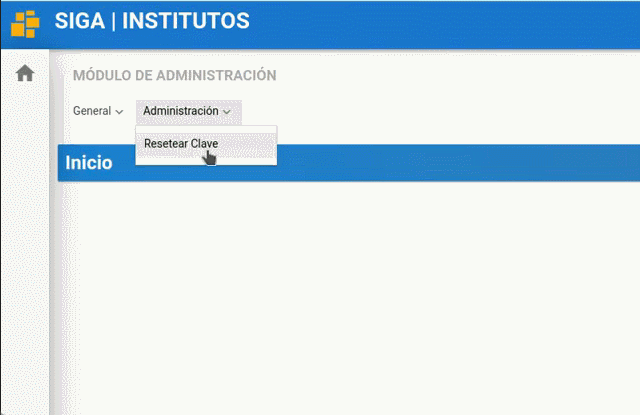 Luego presione la tecla "Tabulacion"
-
En el campo nueva clave borre la cedula y digite la nueva contraseña.
 Luego de haber digitado la nueva clave, damos click en el boton regenerar clave. Y listo ha completado el cambiar de clave satisfactoriamente.
Luego de haber digitado la nueva clave, damos click en el boton regenerar clave. Y listo ha completado el cambiar de clave satisfactoriamente.

Configurar Horarios
Configurar horarios sirve para que se puedan generar las asistencias y el ingreso de notas para la materia que se requiera.
Para ello realizaremos los siguientes pasos.
- Diríjase al menú de módulos y dar click en el Módulo "Matrícula". 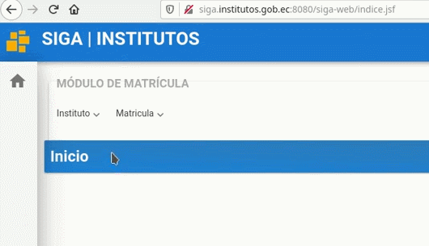
- Luego presione click en el menú "Instituto", después dar click en sub menú "Periodos".

- Seleccione el periodo que desea modificar, a continuación presione el botón "Carreras".

- Seleccione la carrera que desea modificar y luego presione el botón "Niveles Académicos".

- Seleccione el nivel académico en el que se encuentra la asignatura que desea configurar y presione el botón "Asignaturas". 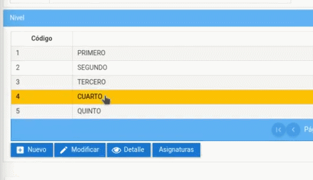
- Selecciones la asingatura a configurar, posteriormente presione el botón "Modificar".

- Se podrá visualizar un calendario y los paralelos de la asignatura seleccionada, confirme que seleccionó la opción correcta.

- Ubíquese en el paralelo que usted desea configurar y en la tabla "Horario de clases" puede realizar la configuracion por dias y horas que necesite modificar.

- Para que aparezca un nuevo menú presiona el botón de la sigla del día de la semana y seleeciona el horario que necesite.

- Realice los mismo pasos para todos los dias de la semana.
- Luego de terminar de configurar los horarios presione el botón "Guardar" y aparecerá un mensaje diciendo "Proceso realizado con éxito".

Configurar Calendarios
Configurar calendarios sirve para que se puedan generar las asistencias y el ingreso de notas para la materia que se requiera.
A continuación realice los siguientes pasos para configurar el calendario.
-
Ubíquese en el Calendario y desplácese a la "Fecha de Inicio" según necesite.

-
Presione click en el día que necesite configurar. Se desplegará una ventana y seleccione el "Tipo de Hito" según necesite. 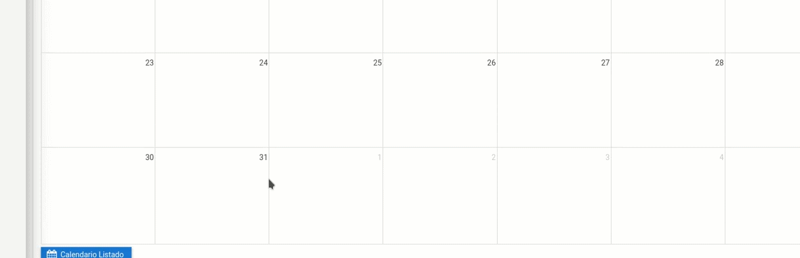
-
Relice los mimos pasos para la "Fecha Final".

-
Por último presione el botón "Gurdar".

Generar reportes
Para ejecutar reportes dentro del sistema SIGA
-
Dirijase a la sección "Módulos" en la parte superior izquierda e ingrese al módulo "Reportes".

-
En el menú de reportes presione dentro del submenú "Ejecución de Reportes".

-
Presione el botón "listar valores" el cual mostrara la lista de reportes, seleccione el reporte a generar y presione el botón "seleccionar" al reporte que desea generar.

-
Cada reporte tiene sus respectivos filtros o campos de búsqueda, por ejemplo, el reporte "ficha docente" requiere ingresar el número de cédula. Ingrese el número de cédula del docente a continuación
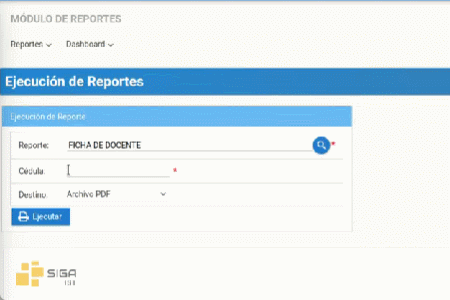
-
Seleccione el tipo de archivo que desee descargar como PDF o XLS y presione el botón "Ejecutar".
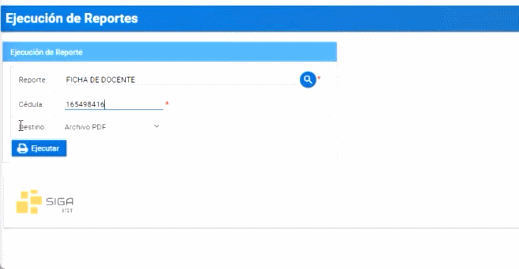
-
A continuación, se le descargara el reporte que generó.
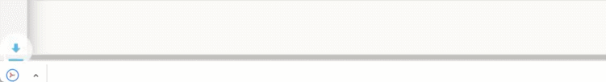

Otro ejemplo si desea generar otro reporte como "DISTRIBUTIVO POR DOCENTE" tiene un campo de búsqueda diferente en este caso son el Periodo electivo y la cédula.
-
Seleccione el periodo que usted desea con el botón lista de valores o inserte el código del periodo electivo
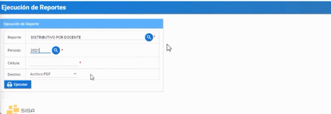
-
Ingrese el número de cédula y el tipo de archivo en que desee descargar como PDF o XLS y presione "Ejecutar"

Generar MATRIZ DE SEGUNDAS Y TERCERAS
-
Seleccione el periodo que usted desea con el botón lista de valores o inserte el código del periodo electivo
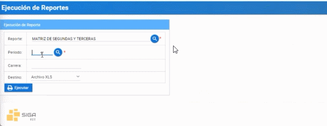
-
Ingrese el código de la carrera y el tipo de archivo que desee descargar como PDF o XLS, y presione "Ejecutar"
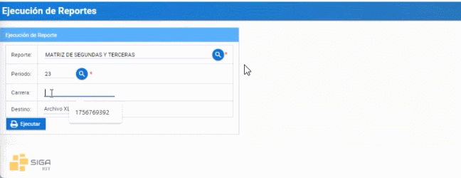
Preguntas relacionadas
¿Como descargo el reporte?
¿Donde imprimo el reporte?
Registro de Docentes
Registrar docentes en el sistema SIGA es un proceso muy fácil, realice estos sencillos pasos.
Para realizar los siguientes pasos deber ingresar con el perfil de "Lider SIGA".
-
Diríjase al menú de módulos y dar click en el Módulo Docente.
-
Dentro del Módulo Docente, dé click en el submenú Docente.

-
Aparecerá un listado de todos los docentes creados en el sistema SIGA.
-
Desplácese hasta el final de la pantalla y presione en el botón "Nuevo" 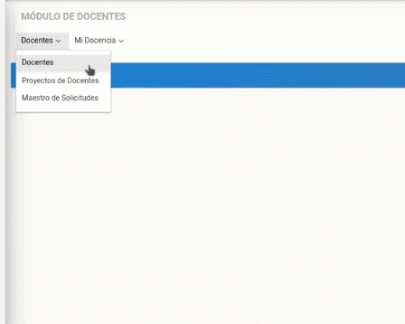
-
Llene el formulario con los datos que se solicita (Los campos marcados con asterisco son obligatorios).

-
Para subir su foto al formulario presione un click en el botón "Cargar Foto" posteriormente dé click en botón "Seleccionar". Aparecerá una ventana donde podra buscar su foto y seleccionarla, finalmente pulse el botón aceptar para subir la imagen. 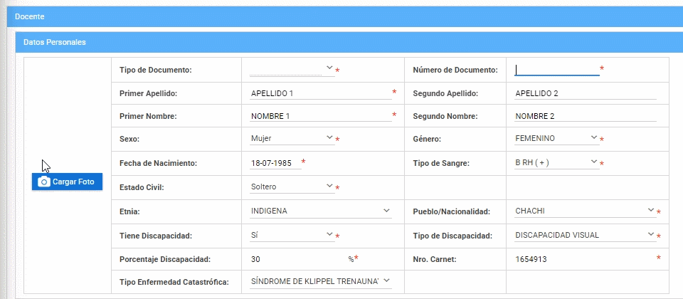
-
En el campo "Tipo de Documento" puede seleccionar entre Cédula y Pasaporte, luego ingrese el número de documento de la misma.

-
En el siguiente campo ingrese sus "Nombres" y "Apellidos" según el orden que se le indica.

-
A continuación elija su "Sexo" y "Género".

-
Al dar click en el siguiente campo "Fecha de Nacimiento" se desplegará un mini calendario donde podrá buscar su fecha de nacimiento.

-
Después seleccione su "Tipo de Sangre".

-
Seleccione su "Estado Civil". 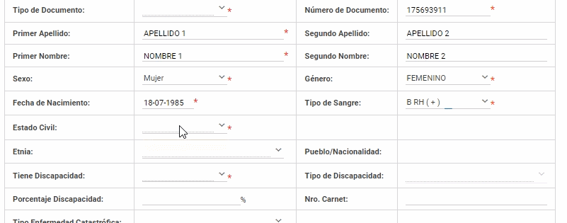
-
A continuación seleccione su "Etnia" y "Pueblo/Nacionalidad" (Dependiendo de la etnia seleccionada tendrá mas opciones para el campo "Pueblo/Nacionalidad").
-
En el campo "Tiene Discapacidad" seleccione la opción Si o NO, en el caso de tener alguna discapcidad podrá describir el tipo de la misma.

-
Posteriormente digite su "Porcentaje de Discapacidad" y "Número de Carnet".

-
A continuación seleccione el "Tipo de Enfermedad Catastrófica". 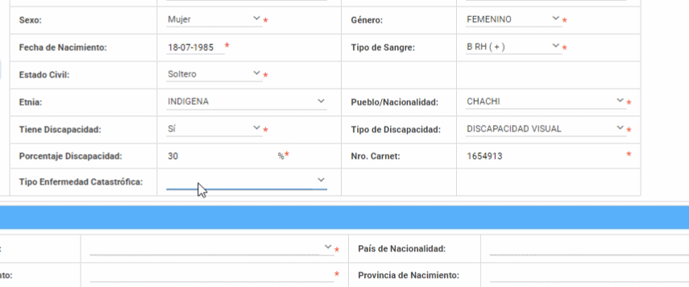
-
Ahora llene el formulario Datos de Contacto.
-
Elija su "País de nacimiento" y "País de Nacionalidad". 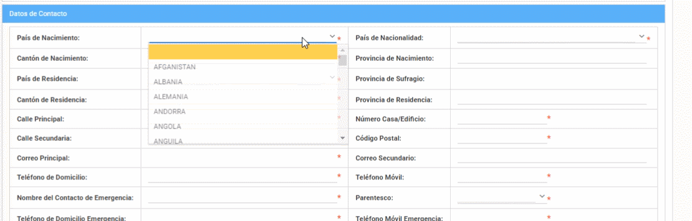
-
En el campo "Cantón de Nacimiento" presione click en el botón con el simbolo de una lupa (listar valores), luego se desplegará una ventana donde puede buscar la provincia y el cantón. Posteroirmente al seleccionar la provincia y cantón se llenará automaricamente el campo"Provincia de Nacimiento".

-
A continuación seleccione el "País de Residencia" y "Provincia de Sufragio".

-
Seleccione el "Cantón de Residencia" después automáticamente se llenará el campo "Provincia de Residencia. 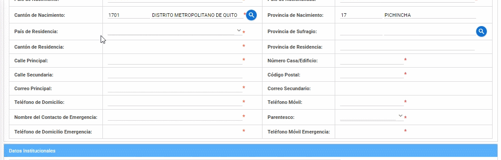
-
Llene los siguientes campos "Calle Principal, Secuandaria" y "Número de Casa y Código Postal".

-
Luego escriba los siguientes datos de contacto que se le solicita.


-
Ahora llene los Datos Institucionales.
-
En el campo "Ingreso por Concurso de Méritos y Oposción" seleccione la opción SI o NO, según corresponda.

-
En el siguiente campo "Fecha de Ingreso a la Institución" seleccione la fecha mediante el mini calendario. 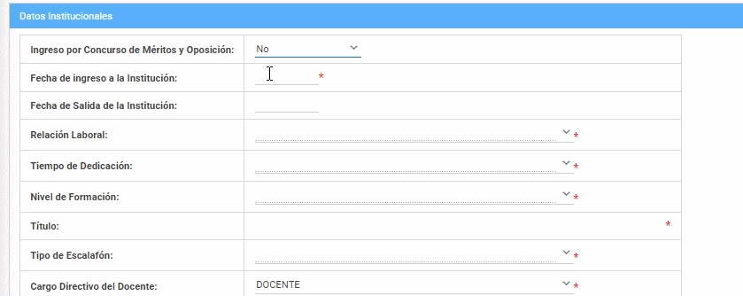
-
Igualmente en el campo "Fecha de Salida de la Institución" seleccione la fecha mediante el mini calendario.
-
A continuación en el campo "Relación laboral" seleccione una de las opciones que se desplega en el campo.
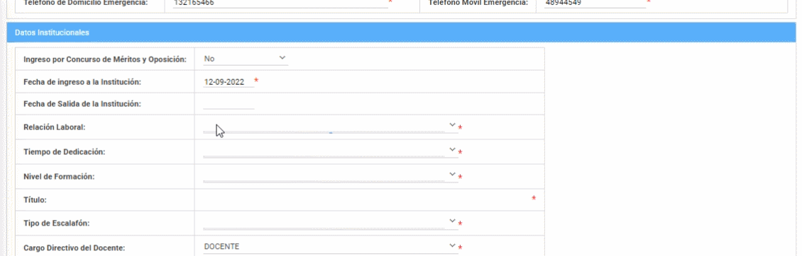 -
Luego seleccione el "Tiempo de Dedicación".
-
Después seleccione el "Tipo de Nivel de Formación".
-
Posteriormente escriba su "Título".
-
En el campo "Tipo de Escalafón" selecione una las opciones que le da el campo.

-
Ahora en el campo "Cargo Directivo del Docente" selecione una de las opciones que le da el campo.
-
Luego en el campo "Grado Ocupacional" seleccione una de las opciones que le da el campo.

-
Escriba su "Salario Mensual".

-
Después en el campo "Está en Período Sabático" selecione una de las opciones que le da el campo.
-
A continuación en el campo "Fecha de Inicio de Período Sabático" selecione una de las opciones que le da el campo.
-
Ahora en el campo "Estás Cursando Estudios" selecione una de las opciones que le da el campo.

-
A continuación escriba la "Institución donde cursa estudios.

-
Después seleccione el "País Donde Cursa Estudios".
-
Escriba el "Título a Obtener".
-
En el campo "Posee Beca" seleccione la opción SI o NO.
-
En caso de haber seleccionado la opcion "SI" podrá seguir llenando los siguientes campos.
-
Finalmente para guardar los datos ingresados presione el botón "Guardar".
Preguntas Relacionadas
¿Cómo registrar un nuevo docente?
¿En qué módulo ingresar para registrar un docente?
¿Cúales son los pasos para registrar un nuevo docente?
Manual Añadir Entidades Publicas/Privadas
Para añadir entidades Publicas o Privadas.
-
Ingrese en la sección Módulos, en la esquina superior izquierda y elija en el módulo Académico.
-
En el Módulo de Académico elija el submenú Administración.
-
Ingrese en el submenú Entidades Públicas Privadas.
-
Se podrá revisar los datos de las empresas y las personas a las que se podrá contactar.
-
Presione el Bóton Nuevo si desea agregar una nueva empresa .
Le aparecerá un mensaje de Guardado Exitoso
-
Presione el Botón Modificar si desea actualizar los datos de la empresa.
Preguntas Relacionadas
¿Dónde puedo cambiar datos de empresas?
¿Cómo cambiar mis datos de empresa?
¿Qué debo poner para cambiar mis datos de empresa?
¿Cómo actualizar los datos empresariales?